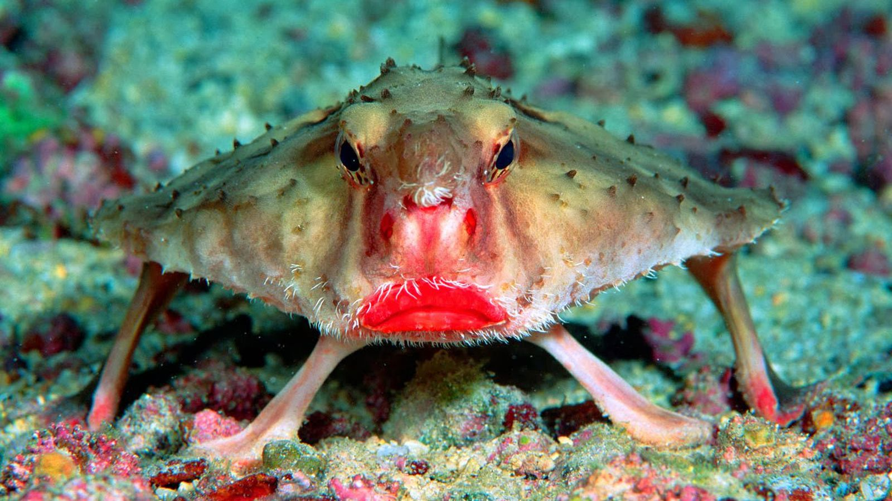

Red Lipped Batfish (Ogcocephalus Darwini)
The front view that inspired the logo
I dubbed this fish the "spamfish" in 5th grade, after I was inspired to send it to a friend a great number of times. In the following years, I have incorporated it as a personal symbol. It can be found everywhere from Profile pictures PCBs to plushies to 3D models to scratch games.

One of many GSF labeled PCBs
This logo was initially made for use on my first PCB, incorporating the ISO font often used in silkscreening. It mainly consists of an outline of the batfish, which creates a confusing, but also visually interesting profile.

3D printed part with GSF label
Over time, I have found that the GSF has become a symbol of my work, and has gained its own set of asthetic principles. Orange parts, well rounded edges, and diagonal slots have become a staple of GSF designs. The idea of unity for my work has made inspiration come more easily, further driving me to develop my skills and continue to create more designs to expand the GSF name.